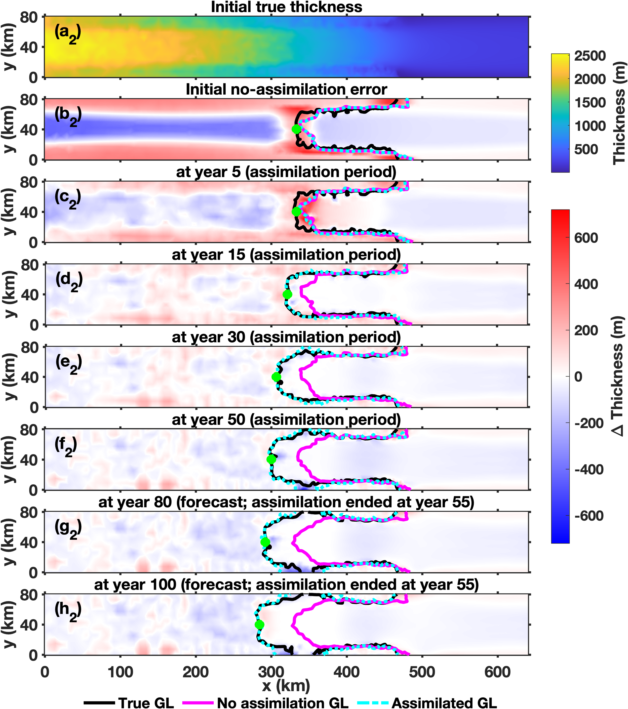
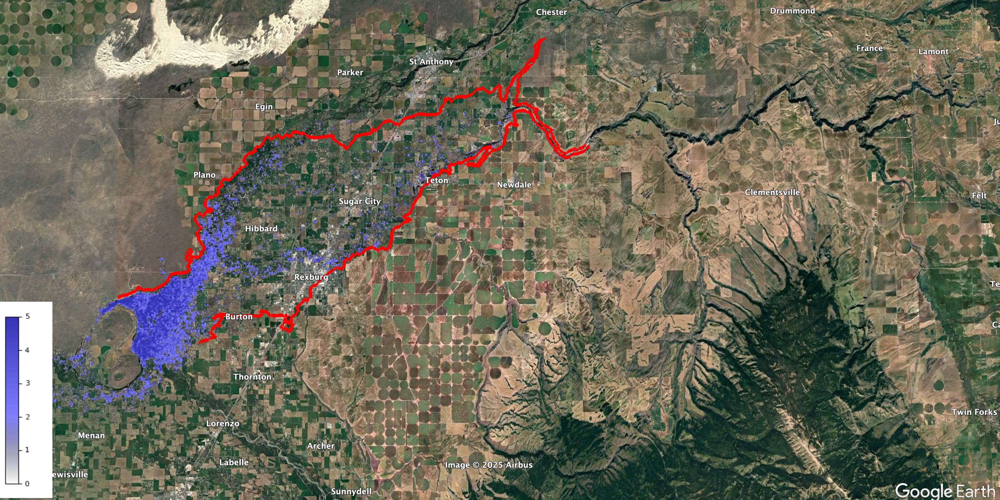
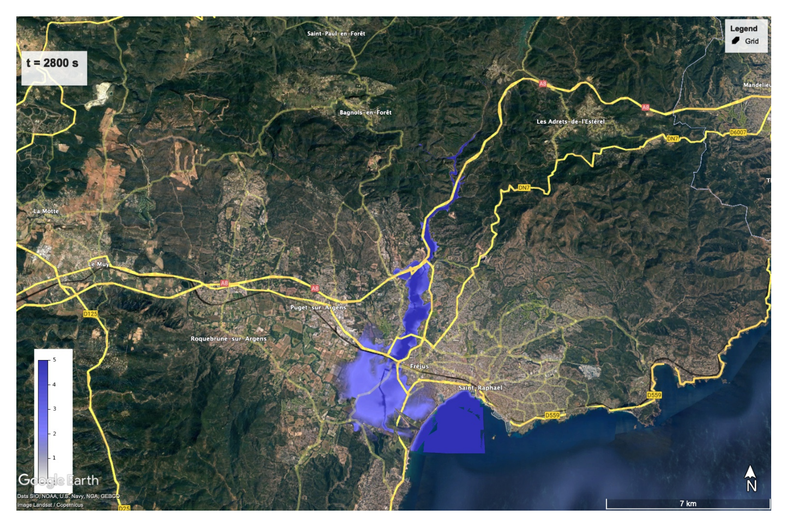

{kind=link}
{kind=link}
{kind=link}
ICESEE-Containers
Reproducible container infrastructure for deploying MPI-based scientific software across HPC systems using Docker and Apptainer.
Repository ↗Software
Open-source tools for modeling, estimation, and reproducible scientific computing.
Scientific cyberinfrastructure
A modular scientific cyberinfrastructure platform connecting cryosphere data, models, data assimilation, and heterogeneous computing environments.
CryoStack brings together four first-class scientific applications: CryoLauncher, ICESEE, Frozen Legacies, and LIVIST. Each retains its scientific interface and workflow. Read the CryoStack documentation for detailed guidance.
A scientific configuration and execution environment for ISSM and Icepack workflows. Basic and Advanced are configuration experiences. Execution is organized around Remote and Cloud; CryoLauncher has no Local execution mode.
An ensemble data assimilation and state/parameter estimation framework supporting ISSM, Icepack, and synthetic systems such as Lorenz-96. ICESEE has its own Local, Remote, and Cloud execution implementations, independent of CryoLauncher’s execution and result handling.
A scientific application centered on historical Antarctic radar observations, including cataloging, interpretation, tracing, and dataset workflows.
A scientific application for Antarctic englacial-temperature products informed by radar and borehole observations, with its own scientific interface and workflow.
Connector/Relay provides connectivity; it is not an execution backend or scientific application. Ordinary Cloud execution does not require it. When needed, it can additionally provide access to private institutional services. Frozen Legacies and LIVIST use application-specific scientific workflows rather than this execution classification.
CryoLauncher ISSM workflows have completed end-to-end execution on AWS Batch Fargate and EC2 On-Demand, including MPI-parallel solver execution, postprocessing, result retrieval, and visualization. Icepack workflows have also been exercised on Fargate and EC2 On-Demand.
A demonstrated Georgia Tech configuration allows an AWS CryoLauncher/ISSM workload to reach institutional MATLAB licensing through Connector/Relay when required. This result is specific to that institutional configuration. EC2 Spot, GPU, and multi-node execution are not presented here as scientifically validated production capabilities.
State & parameter estimation
Open-source, MPI-parallel ensemble data assimilation for ice-sheet and geophysical models.
ICESEE (Ice Sheet State and Parameter Estimator) supports ensemble forecasting and state and parameter estimation for models such as ISSM, Icepack, and Lorenz-96. My work includes MPI-parallel workflows, model interfaces, and Python–MATLAB interoperability. It is both a scientific framework and a first-class application within CryoStack, with its own Local, Remote, and Cloud execution implementations.
View ICESEE on GitHub ↗
Overland flood modeling
A hybrid CPU/GPU computational model using finite volume methods and adaptive mesh refinement.
Developed during my doctoral research at Boise State University. My work includes CPU/GPU benchmarking, CUDA-based Riemann solvers, and finite-volume methods for wet/dry interfaces.
View GeoFlood on GitHub ↗

Reproducible container infrastructure for deploying MPI-based scientific software across HPC systems using Docker and Apptainer.
Repository ↗Spack-based software environment for reproducible builds and deployment of ICESEE and coupled scientific modeling stacks.
Repository ↗Numerical solver and adaptive mesh refinement development for PDE-based geophysical simulations. Contributions include atmospheric extensions and a discontinuous Galerkin solver.
Repository ↗